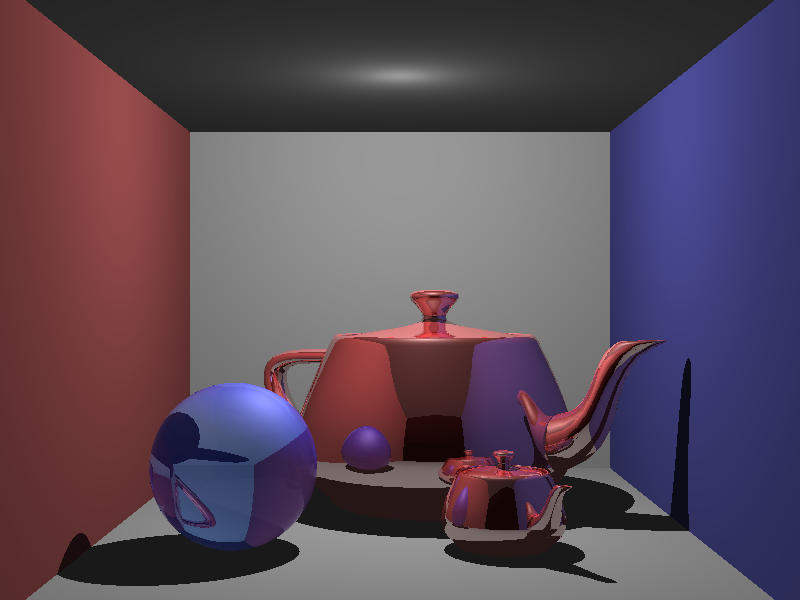

CS6620 - Ray Tracing for Graphics
Project 6 - Bounding Volume Hierarchy.
Results
Before I implemented the BVH, my render was taking 3:41. After adding the BVH, I was able to remove
two minutes of render time, for a rendering time of 1:48.
I still feel like this is much too long. I will be working on figuring out where this slow down is
occurring and hopefully solve the problem.
|  |
 |
| Rendered Image |
Normalized Z-Buffer |
Machine Specs
Running Windows 10 on a Bootcamped MacBook Pro
| Processor |
Intel Core i7 2.50 GHz |
| RAM |
16GB 1600 MHz DDR3 |
| Graphics Card |
Intel Iris Pro 1536 MB |